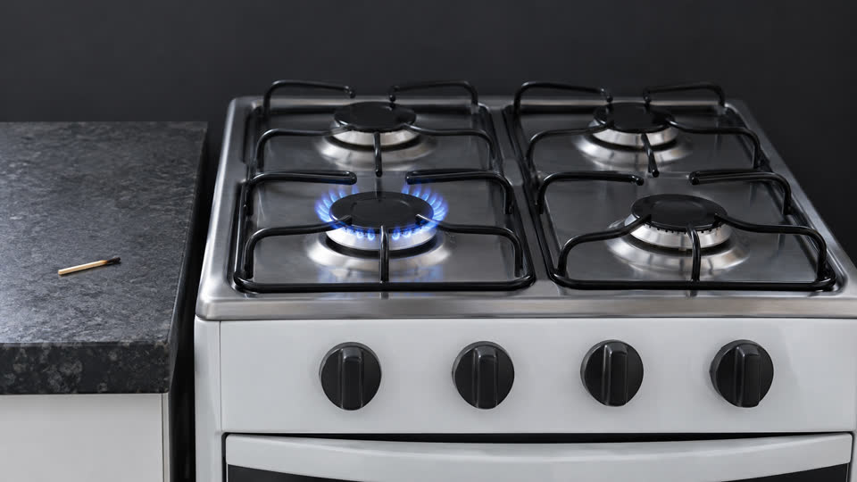

Durante las primeras 72 horas no se cocina: la familia come lo que ya está listo. Así ahorra gas y agua y evita el mayor riesgo de improvisar una llama en casa: el incendio y el monóxido de carbono (un gas sin olor ni color que mata). Si pasan más de 3 días, el plan depende de dónde vivas y de tu cocina.

🥫 72 horas: sin cocinar
Primero, lo que se echa a perder: el refrigerador cerrado mantiene el frío durante unas 4 horas; el congelador lleno, unas 48 horas (medio lleno, 24). Después, la despensa: comida enlatada lista para comer (atún, sardinas, salchichas, frijoles y garbanzos listos, maíz), pan de molde, galletas, mantequilla de maní, frutos secos, frutas y frutas deshidratadas, leche larga vida o en polvo, avena con leche fría, barras de cereal. Abrelatas manual y platos descartables para ahorrar el agua de lavar.

🔥 Más de 3 días: los trucos
Las reservas de arroz, pasta y frijoles necesitan fuego y agua extra para cocinarse (los 2 litros por día son solo para beber). Prefiere lo que se cocina rápido (pasta fina, arroz parbolizado, cuscús, avena) y frijoles enlatados. Mantén siempre la olla tapada. Calor retenido: deja que hierva de verdad (arroz y pasta unos 5 minutos; frijoles remojados, al menos 10 minutos de hervor fuerte, porque los frijoles crudos hacen daño), apaga el fuego, tapa la olla y envuélvela en una manta; terminará de cocinarse con mucho menos gas. Un termo con agua hervida por la mañana sirve para todo el día.

🏠 Casa con cocina a gas
El gas no depende de la electricidad, pero el encendido eléctrico no funciona: ten fósforos o un encendedor en el kit y haz la prueba hoy, con la cocina desenchufada. El horno de algunas cocinas puede no funcionar sin electricidad; cuenta con las hornillas. Un cilindro de 13 kg dura de 3 semanas a 2 meses para una familia de 4: anota cuándo lo cambiaste y cámbialo antes de que se acabe. En la mayoría de los casos, el gas por tubería sigue llegando aunque no haya luz.

🌳 Campo o casa con patio: leña
Una cocina a leña con chimenea es el mejor plan para varias semanas. Si no tienes una, usa un fogón de tres o cuatro ladrillos al aire libre, lejos de la casa, de la maleza seca y de los niños. Guarda leña seca, cortada y cubierta, lejos de la pared, con ramitas para encenderla: la leña verde produce humo y poco calor. Durante la estación seca, respeta la prohibición de quemas y deja un balde de agua al lado. En días de sol fuerte, una cocina solar permite cocinar sin humo.

🏢 Apartamento
Nada de leña, carbón, parrilla ni fogata dentro del apartamento, en la balcón ni en la terraza. El cilindro de gas está prohibido en muchos edificios (en São Paulo y Río de Janeiro, en los que tienen gas por tubería): consulta el reglamento del tuyo y no guardes cilindros de repuesto en casa. Gas por tubería: haz la prueba del fósforo (durante una inundación, el edificio puede cerrar el suministro de gas). Una cocina eléctrica o de inducción no funciona sin luz; tu plan es cambiar buena parte de las reservas para 14 días por comida lista para comer y tener una cocinilla portátil de cartucho, para usar solo en un balcón abierto, si el edificio lo permite (cada cartucho dura de 1 a 2 horas con la llama encendida; un balcón cerrado con ventanas de vidrio no cuenta). Es la única excepción, porque la llama es pequeña, se enciende y se apaga de inmediato y no quedan brasas. Si el edificio no lo permite, el plan es comer solo alimentos listos para consumir y conseguir agua caliente con un vecino que tenga gas. Ponte de acuerdo con los vecinos: quien tenga gas calienta agua para quienes no.

⚠️ Nunca, en ninguna casa
Parrilla, cocinilla a carbón, brasero o generador dentro de casa, en un garaje cerrado o cerca de una ventana; tampoco enciendas la cocina o el horno para calentar. Si varias personas tienen dolor de cabeza, náuseas y mareos al mismo tiempo, salgan al aire libre y llamen al 193. Si huele a gas: abre las ventanas, cierra la llave de paso, no toques ningún interruptor, sal y llama al 193. La cocinilla de cartucho también emite monóxido: úsala solo al aire libre o en un balcón abierto, nunca en un espacio cerrado. Un detector de monóxido de carbono a pilas es barato y protege a la familia.